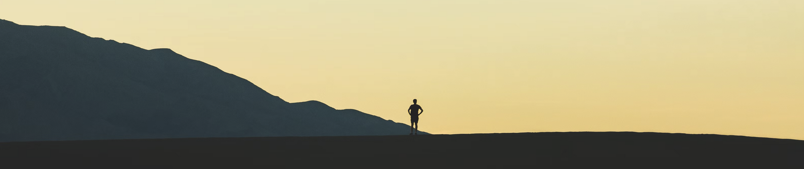

<!DOCTYPE html>
<html lang="en">
  <head>
    <meta charset="utf-8" />
    <meta name="viewport" content="width=device-width, initial-scale=1.0, maximum-scale=1.0, user-scalable=no" />

    <title></title>
    <link rel="stylesheet" href="dist/reveal.css" />
    <link rel="stylesheet" href="dist/theme/blood.css" id="theme" />
    <link rel="stylesheet" href="plugin/highlight/zenburn.css" />
	<link rel="stylesheet" href="css/layout.css" />
	<link rel="stylesheet" href="plugin/customcontrols/style.css">


    <script defer src="dist/fontawesome/all.min.js"></script>

	<script type="text/javascript">
		var forgetPop = true;
		function onPopState(event) {
			if(forgetPop){
				forgetPop = false;
			} else {
				parent.postMessage(event.target.location.href, "app://obsidian.md");
			}
        }
		window.onpopstate = onPopState;
		window.onmessage = event => {
			if(event.data == "reload"){
				window.document.location.reload();
			}
			forgetPop = true;
		}


		document.onreadystatechange = () => {
			if (document.readyState === 'complete') {
				if (window.location.href.indexOf("?export") != -1){
					parent.postMessage(event.target.location.href, "app://obsidian.md");
				}
				if (window.location.href.indexOf("print-pdf") != -1){
					let stateCheck = setInterval(() => {
						clearInterval(stateCheck);
						window.print();
					}, 250);
				}
			}
	};


        </script>
  </head>
  <body>
    <div class="reveal">
      <div class="slides"><section  data-markdown><script type="text/template">

<p style="line-height: 0" class="reset-paragraph"></img></p>


<style>
	.references{
		font-size: x-small;
		position: absolute;
		bottom: 8px;
  		right: 16px;
	}
</style>

##### Notetaking and the Personal Knowledge Management scene: <br>Maybe This Time It’ll Stick!
<br>
shawn.graham@carleton.ca

img: [Beinecke Flickr Laboratory](https://en.wikipedia.org/wiki/Commonplace_book#/media/File:Commonplace_book_mid_17th_century.jpg)
<!-- .element: class="references" -->
</script></section><section  data-markdown><script type="text/template">
<p style="line-height: 0" class="reset-paragraph"></img></p>


Reconstruction of the speaker trying to wrangle his notes

img: [Tim Gouw via Unsplash](https://unsplash.com/photos/1K9T5YiZ2WU)
<!-- .element: class="references" -->

<aside class="notes"><p>i&#39;ve always muddled through. then, I wasn&#39;t in academia for a long time. what skills I had, had withered, atrophied, for taking meaningful notes. I still read a lot, still wrote a lot, but I did not really have a meaningful note taking habit, if you see what I mean</p>
</aside></script></section><section  data-markdown><script type="text/template">
Then I met Hollis

<aside class="notes"><p>working with Hollis - the everyday ablism of academia - how to take good notes when you can&#39;t hold a book open, and typing is not particularly easy? Finding an approach that could work with Hollis sparked a long interest in the basic tools of being a modern digitally-inflected academic. We all use digital tools, but that doesn&#39;t mean we have data or digital literacy to any great degree;</p>
</aside></script></section><section  data-markdown><script type="text/template"><p style="line-height: 0" class="reset-paragraph"></img></p>


[nvAlt](https://brettterpstra.com/projects/nvalt/), Brett Terpstra's fork of the original [Notational Velocity](https://notational.net/)

<aside class="notes"><p>rapid note taking tool; search &amp; note creation in the same pane; notes kept in a database; I started with this</p>
</aside></script></section><section  data-markdown><script type="text/template">
<p style="line-height: 0" class="reset-paragraph"></img></p>

My Quest

img: [Pablo García Saldaña via Unsplash](https://unsplash.com/photos/EqRnmhc50g0)
<!-- .element: class="references" -->

<aside class="notes"><p>I keep a <em>kind</em> of notebook at electricarchaeology.ca ; it&#39;s really more of a space for reflecting on things I&#39;ve done, as well as keeping track of some of the nitty gritty of learning various technologies; sometimes I post essays or works-in-progress. In the last decade I have written 20 posts there on various attempts at finding the ideal notebook workflow for reading and engaging with academic literature.</p>
</aside></script></section><section  data-markdown><script type="text/template">
<!-- .slide: data-background-image="https://electricarchaeologist.files.wordpress.com/2014/09/screen-shot-2014-09-26-at-1-36-03-pm.png" -->


<aside class="notes"><p>things got.... complex. I also, at around the same time, started using Scrivener for my writing. Since scrivener uses the visual metaphor of index cards on a cork board, which you can move around to find the right order for your thoughts, and keeps those individual index cards as unique text files in a folder, I figured I could use something like Notational Velocity to push what I was making there into a scrivener project, and then I could write around the notes, AND I could push things to a private repo on Github or move to dropbox for safekeeping.... waaaay tooo many moving pieces.</p>
</aside></script></section><section  data-markdown><script type="text/template">
For a while, I was right into trying to make _open_ notebooks

<aside class="notes"><p>In this, I was inspired by work like Caleb McDaniel&#39;s research wiki for his notes while writing The Sweet Taste of Liberty, and work from the open science side of things. But keeping this thing online &amp; working was exhausting. And while I still think there&#39;s value in this: this is dangerous, obviously, for people who don&#39;t look like me, who don&#39;t have the security that I do, who don&#39;t have my privilege.</p>
</aside></script></section><section  data-markdown><script type="text/template">
And My Note Taking Didn't Improve

<aside class="notes"><p>But it was around this time that I encountered the workflow of Dan Sheffler, who at the time was writing his PhD. His posts introduced me to the workflow of the sociologist Niklas Luhmann, and Sheffler&#39;s implementation of that workflow using the Sublime text editor and a whole bunch of other supporting tools. But I kept trying to marry this approach with an online notebook - radical openness.</p>
</aside></script></section><section  data-markdown><script type="text/template">
Who Am I Doing This For?

And What Do I Want It To Achieve?

<aside class="notes"><p>I came around to a few realizations the hard way. One, there&#39;s a difference about being open about your process, detailing it where other folks can either benefit or help critique/improve it, and basic notetaking.</p>
<p>Two, that notetaking is writing</p>
<p>Three, one note = one thought</p>
<p>Four, your notes are a reflection of your thinking and so you&#39;ve got to make connections.</p>
<p>and oh - it should be free. I think Devonnote might be quite cool, but I&#39;ve never used it because I don&#39;t want to be investing energy into something that I can&#39;t immediately get my students using.</p>
</aside></script></section><section  data-markdown><script type="text/template">
<p style="line-height: 0" class="reset-paragraph"></img></p>


Sonke Ahrens calls this building a framework to think with.

https://takesmartnotes.com

<aside class="notes"><p>It should not only make it easy to find notes quickly, it should also point out relevant notes when you need them - even if you did not search for them.</p>
<p>It should help you to clarify your thoughts, let you experiment with ideas and spark new ones.</p>
<p>A good system gets exponentially better the more you feed it.</p>
</aside></script></section><section  data-markdown><script type="text/template"><!-- .slide: data-background-image="galaxy.png" -->

A galaxy of new tools

img: [Greg Rakozy via Unsplash](https://unsplash.com/photos/oMpAz-DN-9I)
<!-- .element: class="references" -->

[Sublime](https://github.com/renerocksai/sublime_zk), [Atom](https://github.com/Zettelkasten-Method/atom-wikilink), [Sublimeless-zk](https://github.com/renerocksai/sublimeless_zk), [Zettlr](https://zettlr.com/), [Roam](http://roamresearch.com/), [Tiddlywiki](https://tiddlywiki.com/), [The Archive](https://tiddlywiki.com/), [org-roam](https://www.orgroam.com/) [Notion](https://irreal.org/blog/?p=8767), [Craft](https://www.craft.do/), [Obsidian](https://obsidian.md/)

The core idea: one thought, one note; find the connections between them, and knowledge/inspiration will emerge

<aside class="notes"><p>With the publication of Sonke Ahren&#39;s book on How To Take Smart Notes, the note taking scene exploded.</p>
</aside></script></section><section  data-markdown><script type="text/template">
<!-- .slide: data-background-image="https://upload.wikimedia.org/wikipedia/commons/thumb/5/50/Commonplace_book_mid_17th_century.jpg/440px-Commonplace_book_mid_17th_century.jpg" -->

img: [Beinecke Flickr Laboratory](https://en.wikipedia.org/wiki/Commonplace_book#/media/File:Commonplace_book_mid_17th_century.jpg)
<!-- .element: class="references" -->


### The Personal Knowledge Management Scene

[Chris Aldrich & the deep origins of note taking tools in the humble commonplace book](https://boffosocko.com/2021/07/03/differentiating-online-variations-of-the-commonplace-book-digital-gardens-wikis-zettlekasten-waste-books-florilegia-and-second-brains/)

<aside class="notes"><p>he notes that many of the new applications that have suddenly burst onto the scene don&#39;t seem to realize the deep routes of what they&#39;re proposing; even Vannevar Bush&#39;s memex idea ignores it. &quot;They have generally been physical books written by hand that contain notes which are categorized by headings (or in a modern context categories or tags. Often they’re created with an index to help their creators find and organize their notes.&quot;</p>
</aside></script></section><section  data-markdown><script type="text/template">
<p style="line-height: 0" class="reset-paragraph"></img></p>


My current solution:

Obsidian https://obsidian.md
</script></section><section  data-markdown><script type="text/template"><!-- .slide: data-background-image="ra-vault.png" -->

#### This might make more sense if you see it for yourself.

Here is [a vault to get you started](https://github.com/shawngraham/simple-vault)

```https://github.com/shawngraham/simple-vault```

<aside class="notes"><p>share screen and start showing the things that you can do with obsidian. Am using with my RAs to wrangle three separate projects</p>
</aside></script></section><section  data-markdown><script type="text/template">
<p style="line-height: 0" class="reset-paragraph"></img></p>


<aside class="notes"><p>Warning: the development community for Obsidian is very active. There are well over 300 individual plugins to add all sorts of functionality to Obsidian. <strong>It is easy to get distracted</strong> if you are inclined to tinker. Resist adding new plugins until you get a handle on the workflow.</p>
</aside></script></section><section  data-markdown><script type="text/template">
<p style="line-height: 0" class="reset-paragraph"></img></p>


<aside class="notes"><p>a reference note</p>
</aside></script></section><section  data-markdown><script type="text/template">
<p style="line-height: 0" class="reset-paragraph"></img></p>


This is a note in progress. Link goes back to the original reference. It still needs to be linked to the Jeb Card reference. I could tag it; tags are just another kind of link.
</script></section><section  data-markdown><script type="text/template">
## Using Obsidian to draft new work

- use the graph to identify clusters of connected thoughts
- think about what those clusters mean
- make a new note _into which_ you make links or embed passages from these other notes
- write the connective text
- export to word for typography and layout
</script></section><section  data-markdown><script type="text/template">
<video data-autoplay src="compilation-note.mp4" type="video/mp4">
</script></section><section  data-markdown><script type="text/template">
## Bringing in a hypothesis annotation

<video data-autoplay src="insert-hypothesis.mp4" type="video/mp4">

<aside class="notes"><p>use this <a href="https://electricarchaeology.ca/2015/10/06/an-elegant-open-notebook/">https://electricarchaeology.ca/2015/10/06/an-elegant-open-notebook/</a></p>
</aside></script></section><section  data-markdown><script type="text/template">
Keeping Up With the Obsidianites

[Eleanor Konik's Obsidian Roundup](https://www.obsidianroundup.org/)
	</script></section><section  data-markdown><script type="text/template">img: [Wilhelm Gunkel via Unsplash](https://unsplash.com/photos/6bibCUj3lfA)
<!-- .element: class="references" -->

<p style="line-height: 0" class="reset-paragraph"></img></p>


So that's where I am.

Where are you?	</script></section></div>
    </div>

    <script src="dist/reveal.js"></script>

    <script src="plugin/markdown/markdown.js"></script>
    <script src="plugin/highlight/highlight.js"></script>
    <script src="plugin/zoom/zoom.js"></script>
    <script src="plugin/notes/notes.js"></script>
    <script src="plugin/math/math.js"></script>
	<script src="plugin/mermaid/mermaid.js"></script>
	<script src="plugin/customcontrols/plugin.js"></script>

    <script>
      function extend() {
        var target = {};
        for (var i = 0; i < arguments.length; i++) {
          var source = arguments[i];
          for (var key in source) {
            if (source.hasOwnProperty(key)) {
              target[key] = source[key];
            }
          }
        }
        return target;
      }

      // default options to init reveal.js
      var defaultOptions = {
        controls: true,
        progress: true,
        history: true,
        center: true,
        transition: 'default', // none/fade/slide/convex/concave/zoom
        plugins: [
          RevealMarkdown,
          RevealHighlight,
          RevealZoom,
          RevealNotes,
          RevealMath,
		  RevealMermaid,
		  RevealCustomControls,
        ],

		customcontrols: {
			controls: [
				{id: 'toggle-overview',
				title: 'Toggle overview (O)',
				icon: '<i class="fa fa-th"></i>',
				action: 'Reveal.toggleOverview();'
				},
			]
		},
      };

      // options from URL query string
      var queryOptions = Reveal().getQueryHash() || {};

      var options = extend(defaultOptions, {"width":960,"height":700,"margin":0.04,"controls":true,"progress":true,"slideNumber":true,"transition":"fade","transitionSpeed":"default"}, queryOptions);
    </script>

    <script>
      Reveal.initialize(options);
    </script>
  </body>
</html>
